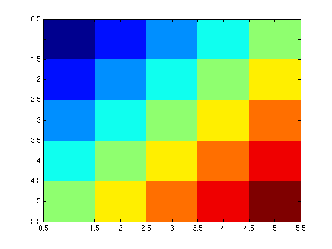
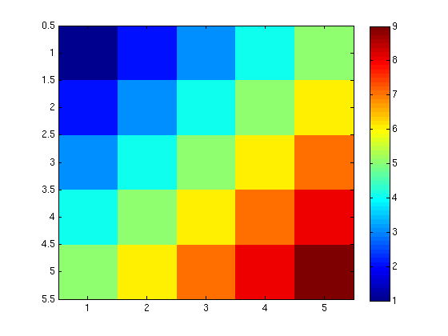

Vectors, Matrices, and Arrays: Basic Operations
Contents
Visualization
Assume we have
SampleArray = [1:5;2:6;3:7;4:8;5:9];
We can plot this data array by calling the function imagesc
imagesc(SampleArray)
Use the colorbar command to see what the colorcode refers to:
colorbar;
Basic Calculation
Simple math between two arrays with same size is straightforward. For example,
A = [1 2 3; 4 5 6]; B = [1 4 9; 16 25 36];
Try
A + B
ans =
2 6 12
20 30 42
and
A - B
ans =
0 -2 -6
-12 -20 -30
Dot-Operators
MATLAB uses the dot-operator (.) construction to distinguish between scalar-vectorized operations and matrix operations. Dot-operators are meant to repeat operations on the members of the array. For example,
A .* A
ans =
1 4 9
16 25 36
returns an array composed by square of each element in A.
(Note: This differs from A*A, which would fail in this case, since the matrix multiplication is only mathematically defined for arrays with the same number of rows and columns.)
Another example of dot-operator is the power (^) function:
B.^0.5
ans =
1 2 3
4 5 6
which applies the "raise to the 0.5 power" operation to each member of the array B.
The division between two arrays is also a dot-operator:
A ./ B
ans =
1.0000 0.5000 0.3333
0.2500 0.2000 0.1667
which allows us to divide elements in A by the corresponding elements in B.
Vectorized Functions
MATLAB is a vectorized language. That means it operates automatically over each member of an array without the need for an explicit loop (which would be necessary in C or FORTRAN). In fact, it is not only more compact, but more efficient and faster to avoid loops if possible.
Most (if not all) MATLAB functions are vectorized. For example:
B = [1 4 9; 16 25 36]; sqrt(B)
ans =
1 2 3
4 5 6
This uses the square root operator over each element of the array. Similarly, try:
log(B)
ans =
0 1.3863 2.1972
2.7726 3.2189 3.5835
sin(B)
ans =
0.8415 -0.7568 0.4121
-0.2879 -0.1324 -0.9918
Exercise
Consider the three arrays:
SampleA = [1:3;4:6;7:9]; SampleB = [ones(1,3);zeros(1,3)]; SampleC = [1:2:5;2:2:6];
For the following sets of two commands, point out which sets have identical commands, and explain why the commands in other sets are different:
1)
SampleA*SampleA; SampleA.*SampleA;
2)
size(SampleB)./size(SampleC); size(SampleB./SampleC);
3)
SampleC.*SampleC; SampleC.^2;